Best practices for producing high
quality PDF files
Version 1.0, 5 May 2006
Adobe’s Portable Document
Format (PDF) is a popular means of sharing documents, especially those
formatted for print. Not coincidentally, PDF files—when prepared
properly—also provide an excellent archival file format.
The two most common ways
to create PDF files are with applications like Microsoft Word,
or by a scanning process that starts with printed materials. Below you’ll
find specific recommendations for producing high quality PDF files using
each of these methods.
Windows instructions |
Macintosh instructions |
Scanning instructions |
More help
You can create PDF files
from within Microsoft Word, for example, when you have the Adobe Acrobat
Standard or Acrobat Professional software. Note that Acrobat Standard
and Acrobat Professional are not the same as Acrobat Reader, the latter
being a free product with limited functions. When
configured properly, the resulting PDF files will be of high quality, suitable
for deposit.
Use the following
steps to configure Adobe Acrobat and create PDF files from within a supported
application such as Microsoft Word.
- Under
the Adobe PDF menu, select Change Conversion Settings. A new window will appear, as shown.
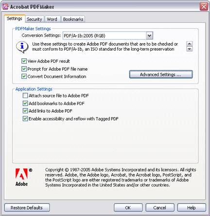
- At Conversion
Settings, select “PDF/A-1b:2005 (RGB)” and click Advanced Settings. A new window will
appear. In this window, click the Images folder and change
all three of the pixels per inch settings, as shown.
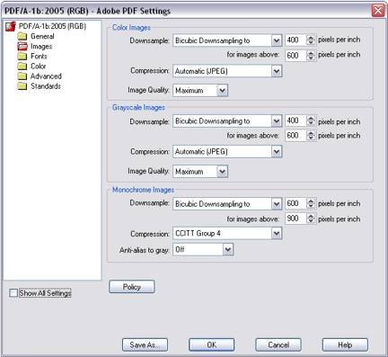
- Click OK. You will be prompted
to save the new settings. Enter “Deep Blue.joboptions” and click Save as shown.
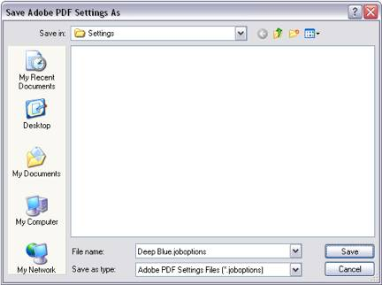
- Click OK. As shown, you will
now have a special Deep Blue conversion setting available whenever you
want to create PDF files for deposit.
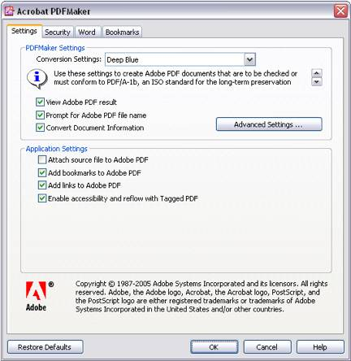
- Now,
under the Adobe PDF menu, select Convert to Adobe PDF. You will be prompted
to save the PDF file, as shown.
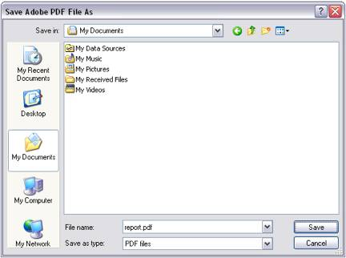
As
per above,
you can produce high quality PDFs using the Adobe Acrobat Standard or Acrobat Professional software. Note
that Acrobat Standard and Acrobat Professional are not the same as Acrobat
Reader, the latter being a free product with limited functions.
- In Acrobat, open Acrobat
Distiller via
the Advanced menu.
- Under Distiller’s Advanced menu item set the Default
Settings option to “PDF/A-1b:2005 (RGB)”.
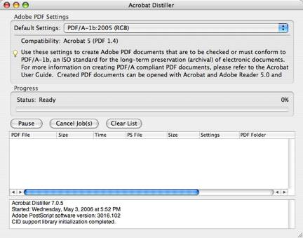
- Under Distiller’s Edit menu, select Edit
Adobe PDF Settings… A new
window will appear. In this window, click the Images tab
and change all three of the pixels per inch settings, as shown.
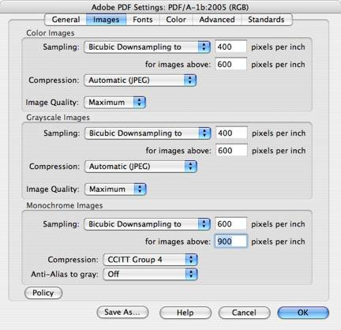
- Click OK. You will be prompted
to save the new settings. Enter “Deep Blue” as shown.
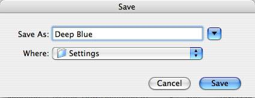
- Click Save. As shown, you will
now have a special Deep Blue conversion setting available whenever you
want to create PDF files for deposit.
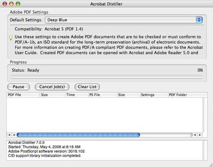
- Now when you select Print… in
Word, under the Printer: menu,
select “Adobe PDF 7.0” as shown below and then click the Print button. Note
that this is different from using the PDF option at the bottom of this
dialogue. Doing so will not produce
the results you want.
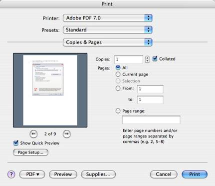
PDF files may also be
created by scanning print materials. From almost every perspective, all
of these methods are less preferable than creating PDF files directly from
an application as described above due to increased file size and compromised
viewing and printing characteristics. Nevertheless, PDF files created from
scanning are a reliable way to preserve materials when no other options
are available.
Regardless of the method,
the produced PDF file should have the following properties:
- All
materials should be scanned at 100% scale to the dimensions of the original.
- Pages
containing text and/or line art should be monochrome (black and white),
600dpi (or 300dpi for oversized materials greater than 11x16 in/28x41 cm),
and be compressed using ITU Group IV compression.
- Pages
containing photographs and/or illustrations should be 24-bit color using
the sRGB color space or 8-bit grayscale, 400dpi (or 300dpi for oversized
materials greater than 11x16 in/28x41 cm), and be compressed with JPEG
compression using the highest quality setting.
- Missing or blank pages
should be represented as blank images of the same size as the original.
- The
PDF file should be optimized and should be in (“Searchable Image (Exact)”/“Image+Text”)
format.
…using Adobe Acrobat Professional
Adobe Acrobat Professional
has built-in scanning capabilities that can be used to create PDF files
using printed materials. Note that Acrobat Professional is not the same
as Acrobat Reader or Acrobat Standard; only Acrobat Professional has support
for scanning.
Use the following steps
to create PDF files using a scanner with Adobe Acrobat Professional. These
steps apply to both Windows and Macintosh, with only slight variations
in appearance:
- From the File menu, select Create
PDF and
then From Scanner.
- Select your scanner
device, choose Front Sides or Both
Sides as appropriate,
select Recognize Text Using OCR,
and select Add Tags To Document.
- Click Image Settings.
A new window will appear. In this window, change the settings as shown.
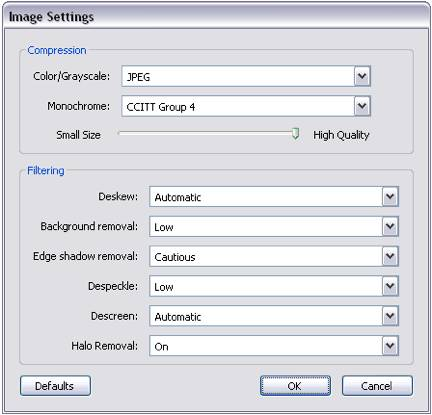
- Click Scan.
…using your own choice of software
Regardless of the method
you use, to create high-quality PDF files, follow the general guidelines
above as well as the following:
- If your process creates
intermediate files (TIFF, PostScript, etc), it must not change the resolution
of the original scans (downsampling) or use lossy compression such as JPEG.
(These methods, although they do reduce file size, will cause irreversible
quality loss.) TIFF is an excellent choice for an intermediate file format,
and acceptable compression schemes (which can all be used in combination
with TIFF) are ITU Group 4 (for black and white material only), LZW, and
Flate (Zip).
If you need to create
a large number of PDF files, these approaches will not be efficient for
you, although the same principles outlined here will apply equally to a
large-volume operation. Before you start your project, contact us and we
will be happy to provide advice to your staff or to your scanning vendor
to make sure that your materials are in the best possible form for preservation.
Questions?
If
you have any questions, please contact us at DeepBlue and we will be happy
to help you create PDF files for the ages.